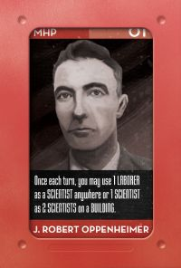
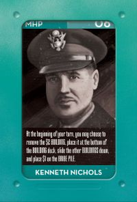

|
|
|
extra bombers or trade bombers for cash. | air defence or damage control | get yellowcake from other player's mines | trade among resource types |
use other players university without espionage | easier bomb building | extort the other players | sell unused bomb designs |
1 espionage for free | immediately reuse a scientist or engineer | powerful extra airstrike capability | |
reuse regular workers, not scientists or engineers, without a full retrieve. | gets bomb cards more easily, and doesn't benefit the other players. |
|  Enhanced worker or scienties capability is used automatically. | Use enhanced worker or engineer capability is applied automatically. | You can use 1 espionage per turn in phase 2 |  Click on the first building to select it for recycling. |
The free planes are allocated automatically You can perform airstrike actions in Phase 2 |  You can use the yellowcake processing facilities on the main board at any time. | Immune to all espionage. |
| Airstrikes This
action is normally available when you have chosed the Airstrike action
on the main player board, but it may also be available when you are
conducting airstrikes as Japan, or performing a single airstrike as
Curtis Lemay. |
| Bomb Building Build
bombs just as you would use a building, start by placing an appropriate
worker on the bomb you want to build. If your current personality
is Oppenheimer or Groves, your scienties or engineer requirement is
automatically reduced by 1 Perform bomb tests by placing the
next bomb test marker on the bomb to be tested. Load the bomb by placing a bomber on the bomb. If you are operating as Israel, the appropriate scientist or engineer requirement will be automatically zeroed. As Israel, one bomb "Small Fry", can be built using no workers at all. To do this, click on the bomb when you have not picked up a worker.. |
| E-Mail: | Go to BoardSpace.net home page |